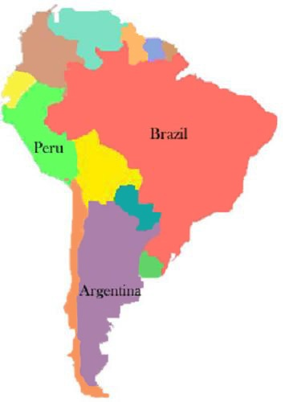

South America is a continent on which there are many countries. These include the countries discussed in this tourism presentaition: Argentina, Brazil, and Peru.
The map of South America is shown on the left. YOu can view the three countries highlighted(Argentina, Brazil, and Peru) by clicking the linkable area on the map. Find out important information about their culture and the tourism industry in each country.
If you want to learn more about this or any other country in the area, pleae call us at 1-555-NEW-TOUR or e-mail us at newtour@isp.com for more information.